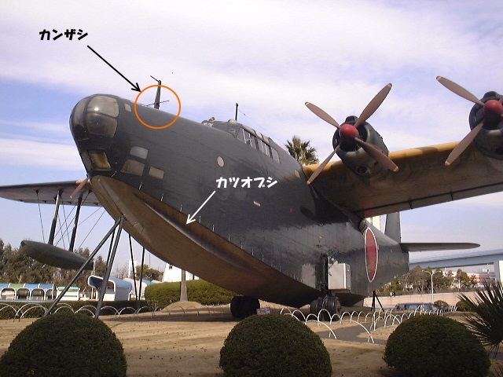
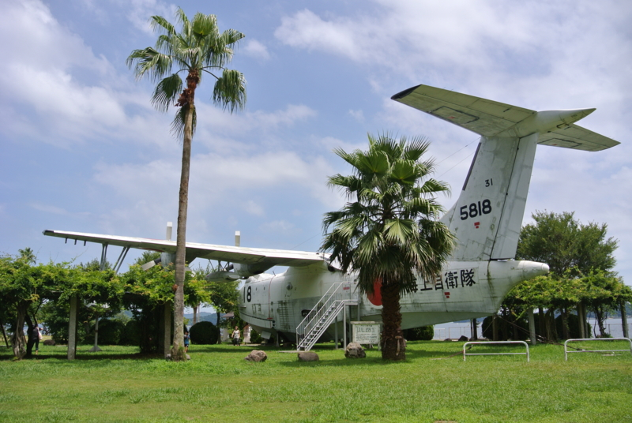

『最後の二式大艇―海軍飛行艇の記録』
公開日：

- 作者: 碇義朗
- 出版社/メーカー: 光人社
- 発売日: 2001/03/01
- メディア: 単行本
- クリック: 1回
- この商品を含むブログ (1件) を見る
飛行艇母艦「秋津洲」のことを調べるために、『ライオン艦長 黛治夫―ある型破り指揮官の生涯』とともに購入。中島飛行機（富士重工業 （スバル）などの母体。戦後解体された）と川西飛行機（新明和工業の前身）の確執から始まって、当時世界最高の飛行艇を作り上げるまでのドラマはとても興味深かった。中島が試作していた陸上重爆撃機に、飛行艇で凌駕してやろうだなんてキチガイ（褒め言葉）だぜ！
それにしても、日本軍ってアホみたいに航続距離がある乗り物が好きだね。零戦といい、伊号潜水艦といい。
二式大艇を製作するにあたって、一番問題になったのは ポーポイズ現象 - Wikipedia なんだそうな。これはネズミイルカ（porpoise）が海面を上下するように泳ぐ様子に由来する言葉だそうで、水上走行中に船体が前後に大きく揺れ、海面に打ち付けられてしまうというもの。これが起こると離水できないばかりか、機体が大破してしまう恐れすらある。
これは、風防に描かれた横線と機首ピトー管つけた横棒（「カンザシ」と呼ばれた）を基準に機体角度を保ったまま操縦することで解決。まぁ、忙しい前線にはなかなかこの操縦方法が伝わらず、無駄に事故でいっぱい機体を失っちゃったケド、それは仕方ナイ。
もう一つの問題は、離水時の波しぶきがすごくて、これがプロペラを叩いて壊してしまうこと。これは「カツオブシ」と呼ばれる機構で解決。船底についてるスジがそれで、要は船底中央から左右に掻き出される水の流れを下向きに制御してやろうという発想やね。戦後これを採用した海外機でも「カツオブシ」と呼ばれているとかいないとか。

防水処理をするための資材が手に入らなくて浸水がキツかったなんて貧乏くさいエピソードもあったけど、ブラックな要求にも応えちゃう昔の技術者ってスゲーなってホントと思う。
それにしても飛行艇というのは船と飛行機のロマンが入り交ざって、独特の魅力があるな。とくに離着水の様子はカッコイイ。もし何かの間違いで大金持ちになったら、こういうのに乗って世界中を回りたいわ。

そういえば、戦艦陸奥のお墓参り行ってきた - だるろぐ で「PS-1」も見たなぁ。この本読んでから行けば、また見る目も違っていたかも。“最後の二式大艇”は鹿屋航空基地資料館に展示されているらしいので、近いうちに見に行きたい。